Diagnose the mechanism.
Paired intervention probes test action sensitivity, context retention, first-frame anchoring, and sampler stress before an expensive repair.
VERIFIABLE DIFFERENTIAL REPAIR
VerdiWM: Verifiable Differential
Repair for World Models
A research loop that turns model failures into targeted repairs—and turns verified evidence into reusable knowledge.
From visual prediction to real-world action.
Ctrl-World motion smoothness
68.75 → 81.53 · WorldArenaREP metrics improve
Appearance trade-offs remain explicitOne evidence-driven research loop
Prediction · adaptation · control01 / THE RESEARCH QUESTION
BEYOND A BETTER SCOREWorld-model research is more than changing code and rerunning training. A useful repair must address the right failure, survive independent verification, and carry a precise account of where it works.
Paired intervention probes test action sensitivity, context retention, first-frame anchoring, and sampler stress before an expensive repair.
Execution and verification have different authority. An experiment produces a receipt; a frozen verifier decides which conclusions the evidence supports.
A stored repair is reused only when the target model’s probe response, support, sign agreement, and effect bounds license transfer. Otherwise, the system abstains.
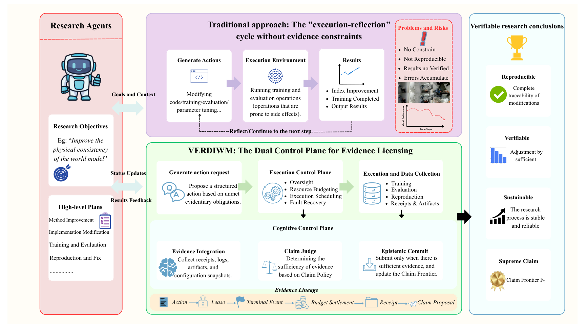
02 / THE METHOD
AN EVIDENCE-LICENSED LOOPVerdiWM connects model diagnosis, localized intervention, and independent verification. Only supported results become reusable repair knowledge.
Paired interventions isolate how the frozen model responds to changes in action, context, anchoring, and sampling. The response fingerprint grounds repair selection in measured behavior.
OUTPUTA model-specific intervention response fingerprint.
Schematic illustration of the workflow. The diagram does not represent measured probe values.
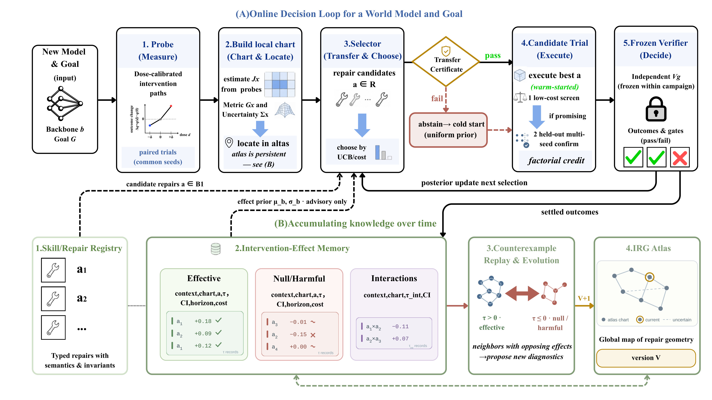
03 / EXPERIMENTAL EVIDENCE
FIVE CAMPAIGNS. EXPLICIT BOUNDARIES.Explore the measurements and replays behind each repair. Improvements, controls, and remaining trade-offs are shown together.
CTRL-WORLD / LaMo + DRIFT
A latent motion prior and drift regularization address weak action-driven transitions while preserving the original backbone interface.
MEASURED EFFECT
Motion smoothness rises by 12.78 points. LPIPS and FID also improve. Background consistency, subject consistency, and dynamic degree remain lower, so the repair is not presented as an unconditional gain.
Source: paper Tables 1–2. WorldArena scores use a 0–100 scale.
| Metric | Ctrl-World | VerdiWM | Change |
|---|---|---|---|
| Semantic alignment | 90.70 | 91.30 | +0.60 |
| Depth accuracy | 93.28 | 96.16 | +2.88 |
| Aesthetic quality | 32.75 | 36.12 | +3.37 |
| Background consistency | 86.37 | 85.11 | −1.26 |
| Dynamic degree | 45.32 | 43.78 | −1.54 |
| Flow score | 26.54 | 30.35 | +3.81 |
| Motion smoothness | 68.75 | 81.53 | +12.78 |
| Subject consistency | 84.31 | 83.35 | −0.96 |
Higher is better unless marked ↓.
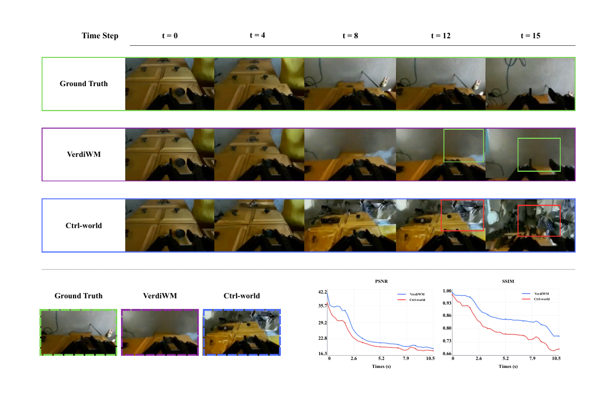
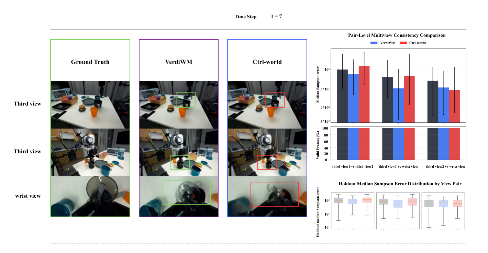
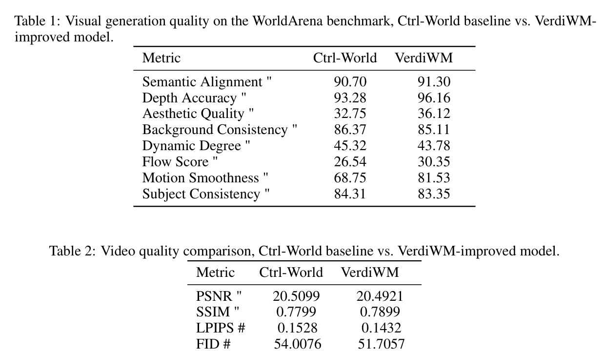
COSMOS-PREDICT2 / DINO-REP
DINO representation targets guide object boundaries, scene layout, and motion. The resulting claim stays bounded by appearance-consistency trade-offs.
6 OF 8 METRICS IMPROVE
Depth accuracy increases to 97.05 and motion smoothness to 81.31. Background and subject consistency decrease. VerdiWM records these regressions as boundaries of the REP repair.
Source: paper Table 3. Changes are percentage-point differences on the 0–100 score scale.
| Metric | Cosmos-Predict2 | VerdiWM | Change |
|---|---|---|---|
| Semantic alignment | 90.38 | 90.82 | +0.44 |
| Depth accuracy | 95.35 | 97.05 | +1.70 |
| Aesthetic quality | 36.05 | 37.30 | +1.25 |
| Background consistency | 85.35 | 82.73 | −2.62 |
| Dynamic degree | 42.18 | 43.15 | +0.97 |
| Flow score | 29.55 | 30.70 | +1.15 |
| Motion smoothness | 78.93 | 81.31 | +2.38 |
| Subject consistency | 83.07 | 81.79 | −1.28 |
Higher is better unless marked ↓.
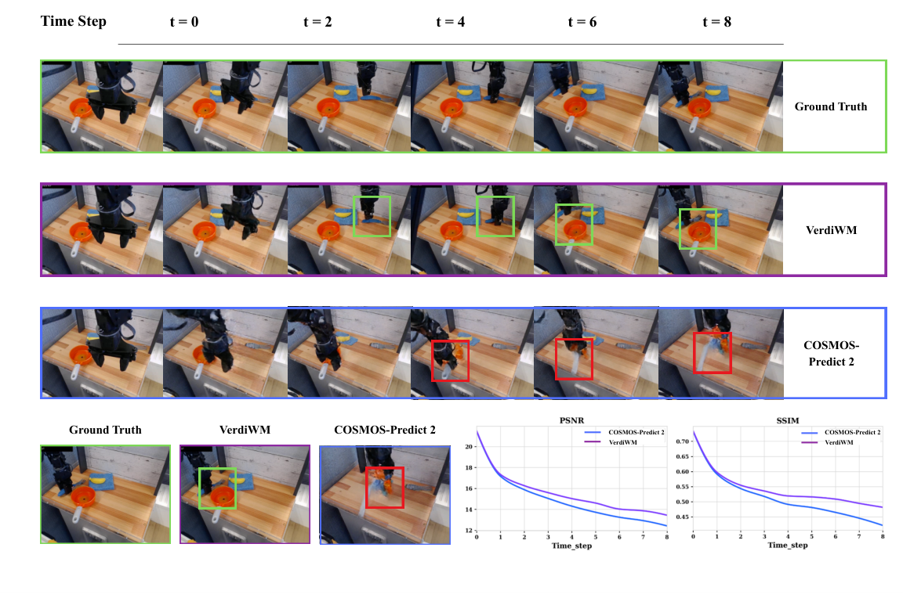
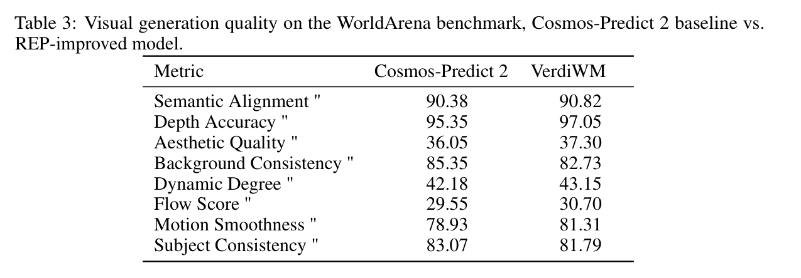
ROBOCOIN / AGILEX COBOT MAGIC
Dataset structure, cameras, and action interfaces guide adaptation of DreamDojo/Cosmos Predict2 from AgiBot post-train 2B weights.
Action-conditioned video-to-world training.
No-action prediction under the same task.
Selected task replays test whether action input changes the predicted trajectory. They do not establish unrestricted transfer to every embodiment or task.
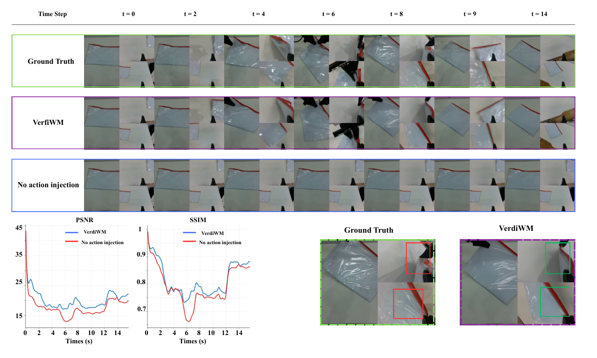
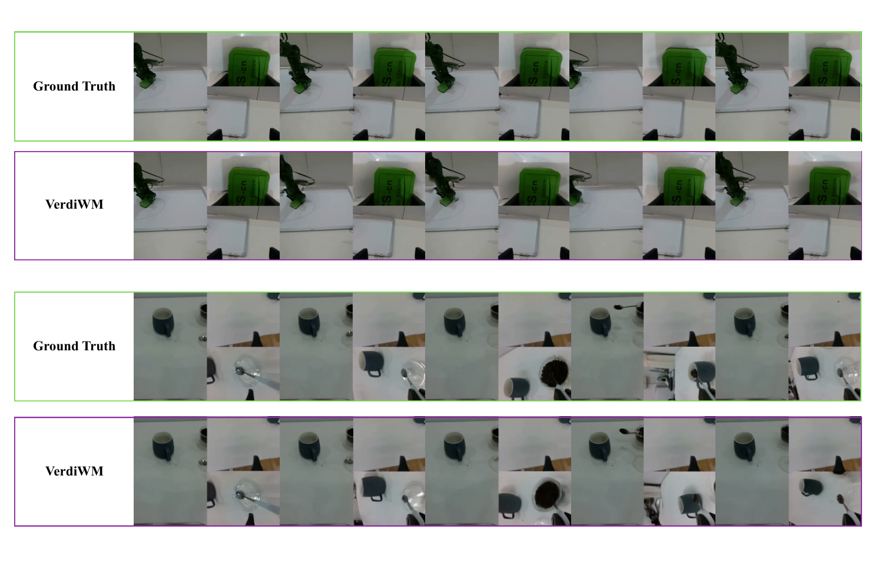
ROBOLAB120 / POLICY RL
The repaired Cosmos3 policy is evaluated as a closed-loop action generator. Terminal success and verified progress—not video appearance—ground the reward.
Terminal task success comes directly from RoboLab.
Only verified subtask progress contributes to the reward.
Failed trajectories stay below successful ones; safety events enter the final gate.
10 × terminal success + 2 × verified progress
− bounded invalid-action penalty − bounded trusted-safety penalty
The same scene with swapped block positions probes behavior beyond the original placement.
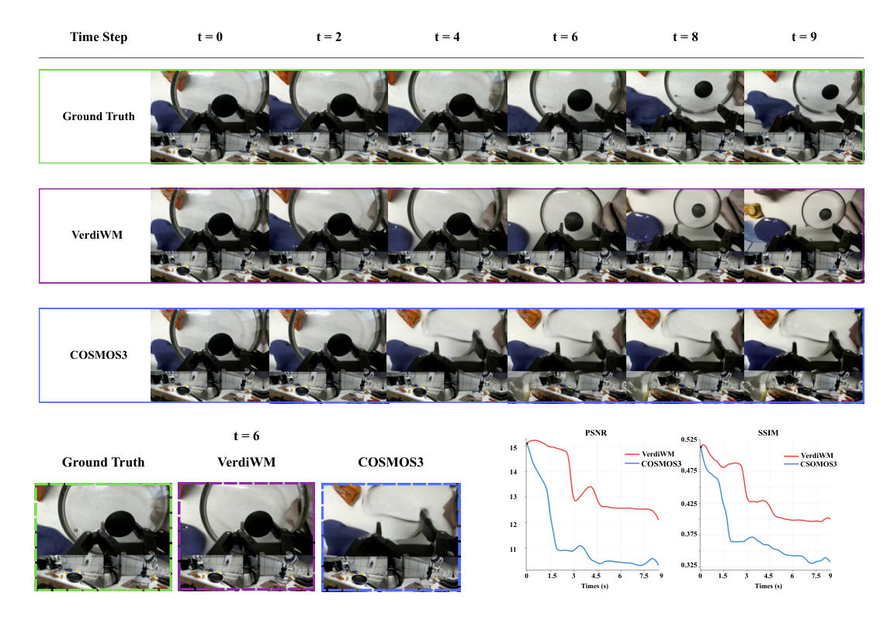
FRANKA / REAL-ROBOT TRIALS
Three qualitative task comparisons examine interference handling, path quality, and occlusion-aware grasping. Videos are presented at 4× speed.
These demonstrations complement the paper’s closed-loop success-rate evaluation. Individual clips are not aggregate success-rate estimates; the table below reports its own task set and sample sizes.
| Environment | Task | Avg. steps | COSMOS3 | VerdiWM | Δ |
|---|---|---|---|---|---|
| Simulation n = 50 | Pick-and-place | 8 | 62% | 74% | +12 pts |
| Drawer opening | 11 | 41% | 59% | +18 pts | |
| Peg insertion | 14 | 28% | 52% | +24 pts | |
| Real robot n = 20 | Pick-and-place | 9 | 55% | 70% | +15 pts |
| Drawer opening | 11 | 35% | 55% | +20 pts |
Values reproduced from paper Table 4. Simulation uses paired initial-state seeds. Δ is in percentage points.
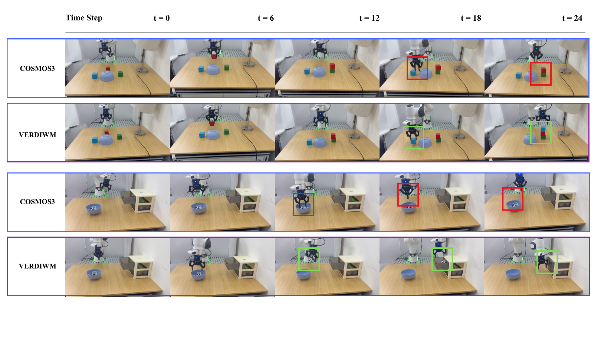
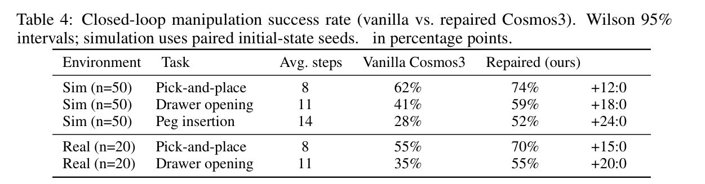
COMPLETE EVIDENCE ARCHIVE
ALL ORIGINAL FIGURES · TABLES · REPLAYSThis archive restores the complete experimental record from the original project page. Nothing is summarized away: the paper figures, quantitative tables, replay samples, controls, and real-robot clips are all available below.
01 / CTRL-WORLD + LAMO
Action-conditioned motion repair with all four replay seeds and the original paper evidence.
02 / COSMOS-PREDICT2 REP
All eight metrics remain visible, including the two appearance-consistency regressions.
| Metric | Cosmos-Predict2 | VerdiWM REP | Change |
|---|---|---|---|
| Semantic alignment | 90.38 | 90.82 | +0.44 |
| Depth accuracy | 95.35 | 97.05 | +1.70 |
| Aesthetic quality | 36.05 | 37.30 | +1.25 |
| Background consistency | 85.35 | 82.73 | −2.62 |
| Dynamic degree | 42.18 | 43.15 | +0.97 |
| Flow score | 29.55 | 30.70 | +1.15 |
| Motion smoothness | 78.93 | 81.31 | +2.38 |
| Subject consistency | 83.07 | 81.79 | −1.28 |
03 / ROBOCOIN · AGILEX COBOT MAGIC
Action conditioning is tested against the no-action control on green-folder, red-folder, and three-view tasks.
04 / ROBOLAB120 · POLICY RL
Environment-grounded success and verified progress supply the reward; video appearance is audit evidence.
05 / FRANKA · REAL ROBOT
Original and repaired COSMOS3 are shown for stacking, tablecloth folding, and occluded bowl-to-drawer grasping.
04 / RESEARCH MEMORY
REPAIR KNOWLEDGE, WITH PROVENANCEEach memory connects a model, an intervention, and its supporting evidence. Inspect the repair recipes and claim boundaries carried forward from each campaign.
PERSISTENT
VerdiWM stores actions, receipts, model context, validity gates, and claim boundaries so repairs are reused only when evidence licenses transfer.
VERDIWM
{kind=link}
{kind=link}
{kind=link}
{kind=link}
{kind=link}
{kind=link}
{kind=link}
{kind=link}
{kind=link}
{kind=link}
{kind=link}
{kind=link}